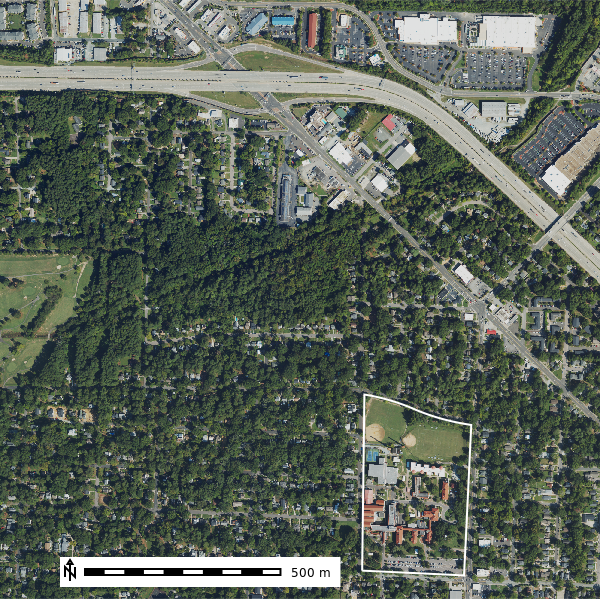
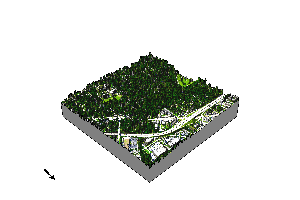
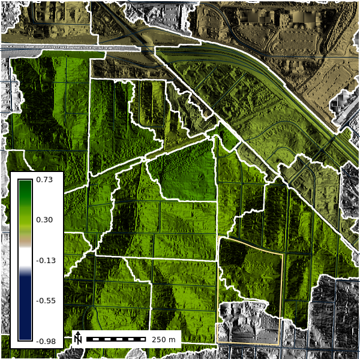
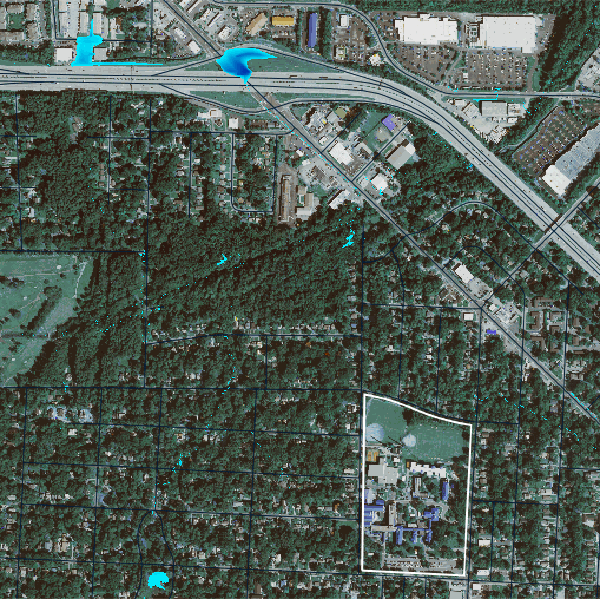

%%bash
apt-get install grass grass-dev grass-doc
# leave the directory with source code
cd ~
# download sample data
mkdir -p grassdata
mkdir -p output
curl -SL https://grass.osgeo.org/sampledata/north_carolina/nc_basic_spm_grass7.zip > nc_basic_spm_grass7.zip
unzip -qq nc_basic_spm_grass7.zip
mv nc_basic_spm_grass7 grassdata
rm nc_basic_spm_grass7.zip
curl -SL https://storage.googleapis.com/public_grassdata/ncssm_workshop_data/ncssm.zip > ncssm.zip
unzip -qq ncssm.zip
mv ncssm grassdata/nc_basic_spm_grass7
rm ncssm.zip

Intro to Geoprocessing with the GRASS GIS Geoprocessing Engine
During the workshop, we aim to introduce you to the basic concepts of geospatial processing and modeling with GRASS GIS.
Teacher
Dr. Corey T. White is a geospatial scientist and educator with over 20 years of experience in the field of geospatial science. He is the founder of OpenPlains, an interactive geospatial modeling platform for climate-resilience. Dr. White has a Ph.D. in Geospatial Analytics from North Carolina State University and teaches geospatial modeling and UAS mapping at the Center for Geospatial Analytics at NC State University.
Workshop Objective
At the end of this workshop, you will be able to:
- Understand the basic concepts of GIS
- Understand the basic concepts of geoprocessing
- Understand the fundamentals of GRASS GIS
- Perform basic geoprocessing tasks with GRASS GIS
- Understand how to use GRASS GIS in a Jupyter notebook
- Develop a basic workflow for geoprocessing tasks
- Publish a basic web map with geoprocessing results
Install GRASS GIS and Data in Google Colab
Google Colab is a free cloud service that allows you to run Python code in a Jupyter notebook environment. We will use Google Colab to run GRASS GIS and perform geoprocessing tasks.
What is GIS?
GIS (Geographic Information System) is a system designed to capture, store, manipulate, analyze, manage, and present spatial or geographic data. GIS applications are tools that allow users to create interactive queries (user-created searches), analyze spatial information, edit data in maps, and present the results of all these operations.
Geospatial data
Geospatial data is data that is associated with a particular location on the surface of the Earth. This data can be represented in many forms, such as vector data (points, lines, polygons), and raster data. Geospatial data can be used to answer questions such as “Where is the nearest hospital?” or “What is the likelihood of flooding at a given location?”.
Raster Data
Raster are a way of represent continuous or discrete spatial data in a grid format. Each cell in the grid has a value that represents a particular attribute. For example, a raster could represent the temperature of the Earth’s surface, with each cell representing the temperature at a particular location.
Vector Data
Vector data is represented as points, lines, and polygons on a map. Points are used to represent specific locations, such as the location of a tree or a building. Lines are used to represent linear features, such as roads or rivers. Polygons are used to represent areas, such as the boundaries of a city or a forest.
Geospatial Data Collection
Geospatial data is collected in many ways, such as:
Earth Observation Systems (Satellites, Aircraft, UAS)
| System | Spatial Resolution | Temporal Resolution |
|---|---|---|
| UAS | 2cm to 5cm RGB, Variable | Multiple times daily |
| PlanetScope | 3m RGB-NIR | Daily |
| Landsat 8 | 30m multispectral, 15m panchromatic | 16 days |
| Sentinel-2 | 10m visible and NIR, 20m SWIR | 5 days at equator |
| MODIS (Terra and Aqua) | 250m for some bands; 500m and 1km for others | 1 to 2 days |
| GOES | 0.5km visible, 2km infrared | Every 30 seconds to 15 minutes |
| Copernicus Sentinel-1 | 5 to 25m | 6 to 12 days |
| ALOS-2 | 3 to 10m | 14 days |
| NOAA-20 | 375m | Daily |
| Himawari-8 | 0.5 to 2km | 10 minutes for full disk, 2.5 minutes for Japan |
| ICESat-2 | 17m along-track footprint | Revisits every 91 days |
Sensor Networks
In-situ sensor networks are used to collect data in the environment. Common use cases incldue weather stations, flood gauges, and air quality sensors.
Mobile Devices
Mobile devices are used to collect data in the field. Common use cases include GPS data, photos, and field observations.
Coordinate Reference Systems (CRS)
Coordinate reference systems (CRS) are used to specify the location of a point on the Earth’s surface.
Geodetic (Geographic) coordinate systems are used to specify the location of a point on the Earth’s surface using latitude and longitude (units degree:minutes:seconds).
Example:
- -78.0, 35.0 (Durham, NC)
Use Case:
- GPS coordinates
- Large regions
- Data Exchange
The most common CRS is the WGS84, which is used by GPS systems.
Projected coordinate systems are used to represent the Earth’s surface on a flat map.
Projected coordinate systems are a type of CRS that is used to represent the Earth’s surface on a flat map. Each version uses a different mathematical model to transform the Earth’s three-dimensional surface into a two-dimensional plane. The choice of a projected coordinate system depends on the region of interest and the purpose of the map.
Example Developable Surfaces: - Cylindrical - Conic - azimuthal
Types of distortion: - Conformal - Equal Area - Equidistant

In North Carolina,NAD83 North Carolina State Plane (EPSG: 3358) is a commonly used projected coordinate system. It uses the Lambert Conformal Conic projection and has units of meters. You can find other various of CRS at epsg.io that can be used for different regions of the world.
Web Mapping & Pseudo-Mercator
Pseudo-Mercator (EPSG: 3857) is a projected coordinate system that is used by web mapping services such as Google Maps, OpenStreetMap, and Bing Maps. It uses the Mercator projection and has units of meters.
Even though it is widely used for web mapping, it is not recommend for professional work because it has a high level of distortion at high latitudes and considers the Earth as a perfect sphere instead of an geoid.
You can see for yourself the distortion of the Mercator projection by using the The true size website.
Learn More Learn more about Map projection transitions Look up CRS at epsg.io
Introduction GRASS GIS
What is a Geospatial Processing Engine?
A geospatial processing engine is a tool that allows to efficiently manipulate geospatial data through the development of scriptable geoprocesing workflows. Geoprocessing engines can be used on a local machine, distributed on the cloud, or on HPC (high performance computing) clusters (i.e., super computers).
With GRASS you can effiently process geospatial data with over 800 tools or develop your own models or tools using its C and Python APIs.
The tools are prefixed to reflect the type of data they are designe to work with.
| Category | Description | Examples |
|---|---|---|
| Display (d.*) | display commands for graphical screen output | d.rast, d.vect |
| General (g.*) | general file management commands | g.list, g.copy |
| Raster (r.*) | raster processing commands | r.slope.aspect, r.mapcalc |
| Vector (v.*) | vector processing commands | v.digit, v.to.rast |
| Imagery (i.*) | image processing commands | i.atcorr, i.pansharpen |
| Database (db.*) | database commands (SQLite, Postgresql, etc..) | db.select, db.in.ogr |
| Raster 3D (r3.*) | 3D raster (voxel) processing commands | r3.mapcalc, r3.gwflow |
| Temporal (t.*) | spatio-temporal data processing commands | t.rast.aggregate, t.rast.series |
| Miscellaneous (m.*) | miscellaneous commands | m.proj, m.nviz.image |
GRASS GIS Projects and Mapsets
In GRASS a project resprests a group of data that is all in the same CRS. Each project can have a collection of subprojects called mapsets. A mapset contains map layers in raster or vector format. Each project has a PERMANENT mapset that is used to store the original data.
Coordinate Reference Systems in GRASS GIS
Every project in GRASS GIS has a CRS. You can view the CRS of a project using the g.proj tool.
We are currently in the nc_basic_spm_grass7 project, which uses the NAD83 / North Carolina (meters) coordinate reference system (EPSG:3358).
Create a new GRASS GIS Mapset
Here we will use the GRASS GIS shell command to create a new GRASS GIS mapset. The ! is used to run shell commands in a Jupyter notebook. The grass command is used to start GRASS GIS and the -c flag is used to create a new GRASS GIS mapset and -e tells the command to exit after it finishes.
# ! means that we are running a command in the shell
!grass -e -c ./grassdata/nc_basic_spm_grass7/tutorial
# You can also create a new project using the Python API
# gs.create_project('nc_basic_spm_grass7', 'grassdata/nc_basic_spm_grass7/tutorial', epsg=3358)GRASS GIS with Python
GRASS GIS has two core libraries for working with geospatial data in Python:
grass.script- Python library for working with GRASS GIS modulesgrass.pygrass- Python library for working with GRASS GIS data structures
We will use the grass.script as gs library to perform geoprocessing tasks in this workshop.
For interaction with Jupiter notebooks, we will use grass.jupyter as gj to display maps and other outputs.
GRASS Python Environment Setup
To use GRASS GIS in Python, we need to set the GISBASE environment variable to the location of the GRASS GIS installation. We also need to add the GRASS GIS Python library to the Python path.
import os
import subprocess
import sys
import numpy as np
import matplotlib.pyplot as plt
from pprint import pprint
from PIL import Image
import pandas as pd
import sqlite3
from IPython.display import IFrame
from IPython.display import display
# Switch to the home directory
# os.chdir(os.path.expanduser("~")) # Colab only
# Ask GRASS GIS where its Python packages are.
gisbase = subprocess.check_output(["grass", "--config", "path"], text=True).strip()
os.environ["GISBASE"] = gisbase
# Ask GRASS GIS where its Python packages are.
sys.path.append(
subprocess.check_output(["grass", "--config", "python_path"], text=True).strip()
)
# Import the GRASS GIS packages we need.
import grass.script as gs
# Import GRASS Jupyter
import grass.jupyter as gjGRASS GIS Session
With our Python environment setup we can start a GRASS GIS session using the gj.init function. Here we pass the the path to our project/mapset (nc_basic_spm_grass7/tutorial). This will allow us to exectute GRASS GIS commands in Python in the tutorial mapset.
# Start a GRASS session
session = gj.init("./grassdata", "nc_basic_spm_grass7", "tutorial")Let’s look at the details of the project CRS using the g.proj command.
gs.run_command("g.proj", flags="g")name=Lambert Conformal Conic
proj=lcc
datum=nad83
a=6378137.0
es=0.006694380022900787
lat_1=36.16666666666666
lat_2=34.33333333333334
lat_0=33.75
lon_0=-79
x_0=609601.22
y_0=0
no_defs=defined
srid=EPSG:3358
unit=Meter
units=Meters
meters=1GRASS GIS Layers
The g.list command or the Python helper function gs.list_grouped let us list what data we have able in our project. We can search by data type and filter the data by mapset.
Here we will list all the raster and vector data in the PERMANENT mapset.
gs.list_grouped(type="raster")['PERMANENT']['basins',
'elevation',
'elevation_shade',
'geology',
'lakes',
'landuse',
'soils']gs.list_grouped(type="vector")['PERMANENT']['boundary_region',
'boundary_state',
'census',
'elev_points',
'firestations',
'geology',
'geonames',
'hospitals',
'points_of_interest',
'railroads',
'roadsmajor',
'schools',
'streams',
'streets',
'zipcodes']Our project has 7 raster and 15 layers for us to examine. However, we must first define computational region before we can work with the data.
Computational Region
In GRASS GIS the region or computational region defines the spatial scale used during computation. Spatial scale reprents the resolution (i.e., grain) of each pixel and the total extent (i.e., area) of the raster.
The computational region impacts your analytical results and the amount of time it takes to process data. You can change the spatial scale by defining regions extent and upscaling (finer data, increased resolution) or downscale (coarser data, decrease resolution) the data.
We can view and set the computational region using the g.region command or the pygrass function gs.region. The raster flag is used to set the region to the extent of a raster layer. The res flag is used to set the resolution of the region.
First, let’s view the current computational region.
# Prints the current computational region
gs.region(){'projection': 99,
'zone': 0,
'n': 228500.0,
's': 215000.0,
'w': 630000.0,
'e': 645000.0,
'nsres': 10.0,
'ewres': 10.0,
'rows': 1350,
'cols': 1500,
'cells': 2025000}Now set the computational region to the spatial scale of the elevation raster layer. The elevation raster data is a Digital Elevation Model (DEM) of the area around Wake County, North Carolina.
gs.region("elevation"){'projection': 99,
'zone': 0,
'n': 228500.0,
's': 215000.0,
'w': 630000.0,
'e': 645000.0,
't': 1.0,
'b': 0.0,
'nsres': 10.0,
'nsres3': 10.0,
'ewres': 10.0,
'ewres3': 10.0,
'tbres': 1.0,
'rows': 1350,
'rows3': 1350,
'cols': 1500,
'cols3': 1500,
'depths': 1,
'cells': 2025000,
'cells3': 2025000}Adjusting the Computational Region
With raster data we can use spatial interpolation to resample our data.
Note: We use different methods for
continuousanddiscretespatial data.
Here the elevation raster layer is resampled using bliniear interpolation so that each cell has a resolution of 250m, 500m, and 1000m using r.resample.interp.
# Set the computational region to the extent of the elevation raster layer with a resolution of 250m making sure to align the region with the rasters grid
gs.run_command('g.region', raster='elevation', res=250, flags='a')
# Resample the elevation raster layer to 250m resolution using bilinear interpolation
gs.run_command('r.resamp.interp', input='elevation', output='elevation_250m', method='bilinear')What impact does resampling have on our evelation data?

Let’s look at what happends when we resample discete raster data like landuse.
# Set the computational region to the extent of the landuse raster layer with a resolution of 250m making sure to align the region with the rasters grid
gs.run_command('g.region', raster='landuse', res=250, flags='a')
# Resample the landuse raster layer to 250m resolution using nearest neighbor interpolation
gs.run_command('r.resamp.interp', input='landuse', output='landuse_250m', method='nearest')
Processing Data
Now that we have set the computational region, we can perform geoprocessing tasks on the data. Here we will use the r.slope.aspect tool to calculate the slope and aspect of the elevation raster layer by running the tool with gs.run_command. The run_command should be used when you do not need a return value from the tool.
gs.run_command("r.slope.aspect", elevation="elevation", slope="slope", aspect="aspect")The slope represents the steepest slope (maximum gradient) angle in degrees from the horizontal plane. The aspect represents the direction that the slope faces.
We can create a DataFrame of the univariate statistics from the slope layer using the r.univar tool by running the tool with gs.parse_command and setting the format to json.
import json
slope_stats_json = gs.read_command("r.univar", map="slope", format="json", flags="e")
slope_stats_dict = json.loads(slope_stats_json)
df_slope = pd.DataFrame(slope_stats_dict)
df_slope = df_slope.T.reset_index()
df_slope.columns = ["statistic", "value"]
df_slope.head(15)| statistic | value | |
|---|---|---|
| 0 | n | 2019304 |
| 1 | null_cells | 5696 |
| 2 | cells | 2025000 |
| 3 | min | 0 |
| 4 | max | 38.689392 |
| 5 | range | 38.689392 |
| 6 | mean | 3.864522 |
| 7 | mean_of_abs | 3.864522 |
| 8 | stddev | 3.007914 |
| 9 | variance | 9.047547 |
| 10 | coeff_var | 77.834045 |
| 11 | sum | 7803645.553885 |
| 12 | first_quartile | 1.854639 |
| 13 | median | 3.215121 |
| 14 | third_quartile | 5.024211 |
Date Visualization
Maps
Map layers can be displayed using the GRASS Jupyter function gj.Map to create a map object. Map objects can use GRASS display tools like d.rast and d.vect to visualize vector and raster map layers.
dem_map = gj.Map() # Create a map object
dem_map.d_rast(map="elevation") # Add the raster map to the map object
dem_map.d_vect(map="roadsmajor", color="black") # Add the vector map to the map object
# Add a raster legend
dem_map.d_legend(
raster="elevation",
at=(5,40,5,9),
title="Elevation (m)",
font="sans",
flags="b"
)
dem_map.d_barscale(at=(50,7), flags="n") # Add a scale bar to the map
dem_map.show() # Display the mapLet’s overlay the elevation data over the aspect to see how the terrain looks with shaded relief.
dem_map = gj.Map() # Create a map object
dem_map.d_shade(color="elevation", shade="aspect") # Add a shaded relief map
dem_map.d_vect(map="roadsmajor", color="black") # Add the vector map to the map object
# Add a raster legend
dem_map.d_legend(
raster="elevation",
at=(5,40,5,9),
title="Elevation (m)",
font="sans",
flags="b"
)
dem_map.d_barscale(at=(50,7), flags="n") # Add a scale bar to the map
dem_map.show() # Display the mapWe can also change the color scheme of our map layers using the r.colors tool. Here we will change the color scheme of the aspect layer to aspectcolr.
gs.run_command("r.colors", map="aspect", color="aspectcolr")dem_shade_map = gj.Map() # Create a map object
dem_shade_map.d_shade(color="aspect", shade="aspect") # Add a shaded relief map
dem_shade_map.d_legend(raster="aspect", at=(5,50,5,9), flags="b") # Add a raster legend
dem_shade_map.d_barscale(at=(50,7,1,1), flags="n") # Add a scale bar to the map
dem_shade_map.show() # Display the map3D Maps
GRASS GIS can also create 3D maps using the nviz tool. The nviz tool allows you to visualize raster and vector data in 3D space. Here we will create a 3D map of the elevation data overlayed with the landuse data.
elevation_3dmap = gj.Map3D(use_region=False, width=800, height=600)
# Full list of options m.nviz.image
# https://grass.osgeo.org/grass-stable/manuals/m.nviz.image.html
elevation_3dmap.render(
elevation_map="elevation",
color_map="landuse",
perspective=35,
height=5000,
resolution_fine=1,
zexag=5,
fringe=['ne','nw','sw','se'],
fringe_elevation=10,
arrow_position=[100,50],
)
elevation_3dmap.overlay.d_barscale(at=(60,10), flags="")
elevation_3dmap.overlay.d_legend(raster="landuse", at=(5,35,5,9), flags="b")
elevation_3dmap.show()Web Maps
elevation_map = gj.InteractiveMap(width=800, height=600)
elevation_map.add_raster("aspect", opacity=0.5)
elevation_map.add_raster("elevation", opacity=0.7)
elevation_map.add_vector("roadsmajor")
display(elevation_map.show())NCSSM NDVI & Watershed Analysis
gj.init("./grassdata/nc_basic_spm_grass7/ncssm")<grass.jupyter.setup._JupyterGlobalSession at 0x76f9ea3dfc40>gs.run_command("g.region", raster="ncssm_be_1m", res=1, flags="ap")projection: 99 (Lambert Conformal Conic)
zone: 0
datum: nad83
ellipsoid: a=6378137 es=0.006694380022900787
north: 252984
south: 251460
west: 615696
east: 617223
nsres: 1
ewres: 1
rows: 1524
cols: 1527
cells: 2327148map = gj.Map()
map.d_rast(map="naip_2022_rgb")
map.d_vect(map="ncssm", fill_color="none", color="white", width=2)
map.d_vect(map="open_channels", color="#7fcdbb", width=2)
map.d_vect(map="roads")
map.d_vect(map="greenways", color="green")
map.d_vect(map="sidewalks", color="grey")
map.d_barscale(at=(10,7), flags="n")
map.show()
Slope & Aspect
gs.run_command(
"r.slope.aspect",
elevation="ncssm_be_1m",
slope="slope",
aspect="aspect",
dx="dx",
dy="dy",
overwrite=True
)ncssm_map = gj.Map()
ncssm_map.d_shade(color="ncssm_be_1m", shade="aspect")
ncssm_map.d_vect(map="ncssm", fill_color="none", color="white", width=2)
ncssm_map.d_vect(map="roads")
ncssm_map.d_legend(raster="ncssm_be_1m", at=(5,50,5,9), flags="b")
ncssm_map.d_barscale(at=(20,8), flags="n", length=250)
ncssm_map.show()
NDVI (Normalized Difference Vegetation Index)
NDVI is a simple calculation that measure chlorophyll absorbtion in plants. It utilizes the Red and Near-Infrared (NIR) light to produce an index between -1 and 1 where 1 represents healthy vegetation and values less than or equal to 0 represent bare earth or other forms of imperious surface.
\[ NDVI = \frac{(NIR - Red)}{(NIR + Red)} \]
gs.run_command(
"i.vi",
viname="ndvi",
red="naip2022.red",
nir="naip2022.nir",
output="naip2022_ndvi"
)Let’s viusalize the NDVI for the area around NCSSM.
ndvi_map = gj.Map()
ndvi_map.d_shade(color="naip2022_ndvi", shade="aspect", brighten=30)
ndvi_map.d_vect(map="ncssm", fill_color="none", color="#FFE599", width=2)
ndvi_map.d_vect(map="roads")
ndvi_map.d_barscale(at=(20,8), flags="n", length=250)
ndvi_map.d_legend(raster="naip2022_ndvi", at=(5,50,5,9), flags="b")
ndvi_map.show()
3D Map
Does not work in Google Colab
elevation_3dmap = gj.Map3D(use_region=False)
# Full list of options m.nviz.image
# https://grass.osgeo.org/grass83/manuals/m.nviz.image.html
elevation_3dmap.render(
elevation_map="ncssm_1m",
color_map="naip2022_ndvi",
perspective=20,
height=3000,
resolution_fine=1,
zexag=1,
# fringe=['ne','nw','sw','se'],
fringe_elevation=0,
arrow_position=[100,50],
)
elevation_3dmap.show()
Watershed
gs.run_command(
"r.watershed",
elevation="ncssm_be_1m",
threshold=10000,
accumulation="accum10k",
drainage="direction10k",
basin="basins10k",
stream="streams10k",
memory=300
)Basins
basins10k_map = gj.Map()
basins10k_map.d_shade(color="basins10k", shade="aspect")
basins10k_map.d_vect(map="ncssm", fill_color="none", color="white", width=2)
basins10k_map.d_vect(map="roads")
basins10k_map.d_barscale(at=(50,7,1,1), flags="n")
basins10k_map.show()
gs.run_command(
"r.stats.zonal",
base="basins10k",
cover="naip2022_ndvi",
method="average",
output="basins10k_ndvi_avg",
flags="c"
)gs.run_command("r.to.vect", input="basins10k", output="basins10k", type="area", flags="v")# Change the map color
gs.run_command("r.colors", map="basins10k_ndvi_avg", color="ndvi", flags="")
basins10k_map = gj.Map()
basins10k_map.d_shade(color="basins10k_ndvi_avg", shade="aspect")
basins10k_map.d_vect(map="ncssm", fill_color="none", color="white", width=2)
basins10k_map.d_vect(map="roads")
basins10k_map.d_vect(map="basins10k", color="black", fill_color="none", width=1.5)
basins10k_map.d_barscale(at=(20,8), flags="n", length=250)
basins10k_map.d_legend(raster="naip2022_ndvi", at=(5,50,5,9), flags="b")
basins10k_map.show()
Streams
gs.run_command("r.thin", input="streams10k", output="streams10k_thin")
gs.run_command("r.to.vect", flags="s", input="streams10k_thin", output="streams", type="line")map = gj.Map()
map.d_rast(map="naip_2022_rgb")
map.d_vect(map="ncssm", fill_color="none", color="white", width=2)
map.d_vect(map="open_channels", color="#7fcdbb", width=1)
map.d_vect(map="roads")
map.d_vect(map="greenways", color="green")
map.d_vect(map="sidewalks", color="grey")
map.d_vect(map="streams", color="blue", width=2)
map.d_barscale(at=(10,7), flags="n")
map.show()
Estimate Flood Innundation
Let’s estimate the flood inundation for the area around NCSSM using the Height Above Nearest Drainage methodology (A.D. Nobre, 2011). First need to install two GRASS addons r.stream.distance and r.lake.series to calculate the distance to the nearest stream and create a flood inundation map.
gs.run_command("g.extension", extension="r.stream.distance")
gs.run_command("g.extension", extension="r.lake.series")Your branch is up to date with 'origin/grass8'.Here we will simulate the flood inundation extent starting from \(0 m\) to \(5 m\) above the nearest stream.
gs.run_command("r.stream.distance", stream_rast="streams10k", direction="direction10k", elevation="ncssm_be_1m", method="downstream", difference="above_stream")
gs.run_command("r.lake.series", elevation="above_stream", start_water_level=0, end_water_level=5, water_level_step=0.5, output="flooding", seed="streams10k")We can visulize the flood event from using the time series of the flood stages using gj.TimeSeries.
flood_map = gj.TimeSeriesMap()
flood_map.d_rast(map="naip_2022_rgb")
flood_map.d_vect(map="ncssm", fill_color="none", color="white", width=2)
flood_map.d_vect(map="roads")
flood_map.add_raster_series("flooding")
flood_map.d_legend()
flood_map.save("output/flooding.gif")
flood_map.show()
We can further analysze our results by looking at the r.univar statistics of the flood inundation layers.
import io
flood_output = gs.read_command("t.rast.univar", input="flooding", separator="comma")
print(flood_output)
df_flood = pd.read_csv(io.StringIO(flood_output), sep=",")
df_flood.head()id,semantic_label,start,end,mean,min,max,mean_of_abs,stddev,variance,coeff_var,sum,null_cells,cells,non_null_cells
flooding_0.0@ncssm,,1,None,0.293114999222854,3.0517578125e-05,6.39630126953125,0.293114999222854,0.530534688513158,0.281467055715753,180.998819548567,3598.57284545898,2314871,12277,12277
flooding_0.5@ncssm,,31,None,0.3905529433589,3.0517578125e-05,6.89630126953125,0.3905529433589,0.403808791069356,0.163061539744895,103.3941231108,59409.3515319824,2175032,152116,152116
flooding_1.0@ncssm,,61,None,0.655780018643008,3.0517578125e-05,7.39630126953125,0.655780018643008,0.451270096181418,0.203644699707586,68.8142491921639,160044.425109863,2083096,244052,244052
flooding_1.5@ncssm,,91,None,0.944751617646385,3.0517578125e-05,7.89630126953125,0.944751617646385,0.552086194782351,0.304799166469256,58.4371790923986,302084.329742432,2007398,319750,319750
flooding_2.0@ncssm,,121,None,1.24039884684191,3.0517578125e-05,8.39630126953125,1.24039884684191,0.676488838166942,0.457637148164459,54.5380092773629,480802.160614014,1939529,387619,387619
flooding_2.5@ncssm,,151,None,1.53000738919042,3.0517578125e-05,8.89630126953125,1.53000738919042,0.813864130666759,0.662374823185959,53.1934771306826,691632.190246582,1875103,452045,452045
flooding_3.0@ncssm,,181,None,1.82265329658102,3.0517578125e-05,9.39630126953125,1.82265329658102,0.954796133406397,0.911635656367807,52.3849563269892,933338.83215332,1815071,512077,512077
flooding_3.5@ncssm,,211,None,2.11564680335754,3.0517578125e-05,9.89630126953125,2.11564680335754,1.09842635059298,1.20654044767702,51.9191742614966,1204911.6300354,1757624,569524,569524
flooding_4.0@ncssm,,241,None,2.40876133883238,3.0517578125e-05,10.3963012695312,2.40876133883238,1.24426257488545,1.54818935526058,51.6557018259267,1503647.58691406,1702907,624241,624241
flooding_4.5@ncssm,,271,None,2.69678338183056,3.0517578125e-05,10.8963012695312,2.69678338183056,1.39404248607332,1.94335445297749,51.6927868758616,1829737.85995483,1648659,678489,678489
flooding_5.0@ncssm,,301,None,2.9949480126371,3.0517578125e-05,11.3963012695312,2.9949480126371,1.53763176419292,2.36431144225502,51.3408499147538,2182355.72290039,1598469,728679,728679
| id | semantic_label | start | end | mean | min | max | mean_of_abs | stddev | variance | coeff_var | sum | null_cells | cells | non_null_cells | |
|---|---|---|---|---|---|---|---|---|---|---|---|---|---|---|---|
| 0 | flooding_0.0@ncssm | NaN | 1 | NaN | 0.293115 | 0.000031 | 6.396301 | 0.293115 | 0.530535 | 0.281467 | 180.998820 | 3598.572845 | 2314871 | 12277 | 12277 |
| 1 | flooding_0.5@ncssm | NaN | 31 | NaN | 0.390553 | 0.000031 | 6.896301 | 0.390553 | 0.403809 | 0.163062 | 103.394123 | 59409.351532 | 2175032 | 152116 | 152116 |
| 2 | flooding_1.0@ncssm | NaN | 61 | NaN | 0.655780 | 0.000031 | 7.396301 | 0.655780 | 0.451270 | 0.203645 | 68.814249 | 160044.425110 | 2083096 | 244052 | 244052 |
| 3 | flooding_1.5@ncssm | NaN | 91 | NaN | 0.944752 | 0.000031 | 7.896301 | 0.944752 | 0.552086 | 0.304799 | 58.437179 | 302084.329742 | 2007398 | 319750 | 319750 |
| 4 | flooding_2.0@ncssm | NaN | 121 | NaN | 1.240399 | 0.000031 | 8.396301 | 1.240399 | 0.676489 | 0.457637 | 54.538009 | 480802.160614 | 1939529 | 387619 | 387619 |
ax = df_flood.plot(x="start", y="mean", title="Mean flooding depth over time", label="Mean")
df_flood.plot(x="start", y="min", ax=ax, style='--', label="Min", color='gray')
df_flood.plot(x="start", y="max", ax=ax, style='--', label="Max", color='gray')
ax.fill_between(df_flood["start"], df_flood["min"], df_flood["max"], color='gray', alpha=0.3)
plt.ylabel("Flooding depth (m)")
plt.xlabel("Time (minutes)")
plt.show()Interactive Estimated Flood Inundation Map
flood_map = gj.InteractiveMap(height=800,width=800)
flood_map.add_raster("naip_2022_rgb")
flood_map.add_raster("flooding_5.0")
flood_map.add_vector("streams@ncssm")
flood_map.add_layer_control()
display(flood_map.show())Export Map as HTML
flood_map.save(filename="./output/index.html")Create a new Project (Location and Mapset)
Create a new subproject (i.e. Mapset)
This example uses a temprary directory to create a new project call myfirstproject with the EPSG:3358 CRS.
from pathlib import Path
import tempfile
tempdir = tempfile.TemporaryDirectory()
gs.create_project(path=tempdir, name="myfirstproject", epsg="3358")Start a new GRASS GIS session in the new subproject
gj.init(Path(tempdir.name), "myfirstproject")Local Data Resources
Where can I get my own geospatial data?
North Carolina Online Data Portals
# Point Data
hospitals = "https://webgis2.durhamnc.gov/server/rest/services/PublicServices/Community/MapServer/0/query?outFields=*&where=1%3D1f=geojson"
schools = "https://webgis2.durhamnc.gov/server/rest/services/PublicServices/Education/MapServer/0/query?outFields=*&where=1%3D1&f=geojson"
# Line Data
roads = "https://webgis2.durhamnc.gov/server/rest/services/PublicServices/Transportation/MapServer/6/query?outFields=*&where=1%3D1f=geojson"
greenways = "https://webgis2.durhamnc.gov/server/rest/services/ProjectServices/Trans_ExistingFutureBikePedFacilities/MapServer/1/query?outFields=*&where=1%3D1f=geojson"
sidewalks = "https://webgis2.durhamnc.gov/server/rest/services/PublicServices/Community/MapServer/5/query?outFields=*&where=1%3D1f=geojson"
# Polygon Datahttps://earth.nullschool.net
zipcodes = "https://webgis2.durhamnc.gov/server/rest/services/PublicServices/Administrative/MapServer/0/query?outFields=*&where=1%3D1f=geojson"
county_boundary = "https://webgis2.durhamnc.gov/server/rest/services/PublicServices/Administrative/MapServer/2/query?outFields=*&where=1%3D1f=geojson"
durham_city_boundary = "https://webgis2.durhamnc.gov/server/rest/services/PublicServices/Administrative/MapServer/1/query?outFields=*&where=1%3D1f=geojson"
school_districts = "https://webgis2.durhamnc.gov/server/rest/services/PublicServices/Education/MapServer/1/query?outFields=*&where=1%3D1f=geojson"!v.import --helpImports vector data into a GRASS vector map using OGR library and reprojects on the fly.
Usage:
v.import [-flo] input=string [layer=string[,string,...]] [output=name]
[extent=string] [encoding=string] [snap=value] [epsg=value]
[datum_trans=value] [--overwrite] [--help] [--verbose] [--quiet]
[--ui]
Flags:
-f List supported OGR formats and exit
-l List available OGR layers in data source and exit
-o Override projection check (use current location's projection)
Parameters:
input Name of OGR datasource to be imported
layer OGR layer name. If not given, all available layers are imported
output Name for output vector map (default: input)
extent Output vector map extent
options: input,region
default: input
encoding Encoding value for attribute data
snap Snapping threshold for boundaries (map units)
default: -1
epsg EPSG projection code
options: 1-1000000
datum_trans Index number of datum transform parameters
options: -1-100!r.import --helpImports raster data into a GRASS raster map using GDAL library and reprojects on the fly.
Usage:
r.import [-enlo] input=name [band=value[,value,...]]
[memory=memory in MB] [output=name] [resample=string] [extent=string]
[resolution=string] [resolution_value=value] [title=phrase]
[--overwrite] [--help] [--verbose] [--quiet] [--ui]
Flags:
-e Estimate resolution only
-n Do not perform region cropping optimization
-l Force Lat/Lon maps to fit into geographic coordinates (90N,S; 180E,W)
-o Override projection check (use current location's projection)
Parameters:
input Name of GDAL dataset to be imported
band Input band(s) to select (default is all bands)
memory Maximum memory to be used (in MB)
default: 300
output Name for output raster map
resample Resampling method to use for reprojection
options: nearest,bilinear,bicubic,lanczos,bilinear_f,
bicubic_f,lanczos_f
default: nearest
extent Output raster map extent
options: input,region
default: input
resolution Resolution of output raster map (default: estimated)
options: estimated,value,region
default: estimated
resolution_value Resolution of output raster map (use with option resolution=value)
title Title for resultant raster mapInstall Add-Ons
!g.extension --helpMaintains GRASS Addons extensions in local GRASS installation.
Usage:
g.extension [-lcgasdifto] extension=name operation=string [url=url]
[prefix=path] [proxy=proxy[,proxy,...]] [branch=branch] [--help]
[--verbose] [--quiet] [--ui]
Flags:
-l List available extensions in the official GRASS GIS Addons repository
-c List available extensions in the official GRASS GIS Addons repository including module description
-g List available extensions in the official GRASS GIS Addons repository (shell script style)
-a List locally installed extensions
-s Install system-wide (may need system administrator rights)
-d Download source code and exit
-i Do not install new extension, just compile it
-f Force removal when uninstalling extension (operation=remove)
-t Operate on toolboxes instead of single modules (experimental)
-o url refers to a fork of the official extension repository
Parameters:
extension Name of extension to install or remove
operation Operation to be performed
options: add,remove
default: add
url URL or directory to get the extension from (supported only on Linux and Mac)
prefix Prefix where to install extension (ignored when flag -s is given)
default: $GRASS_ADDON_BASE
proxy Set the proxy with: "http=<value>,ftp=<value>"
branch Specific branch to fetch addon from (only used when fetching from git)